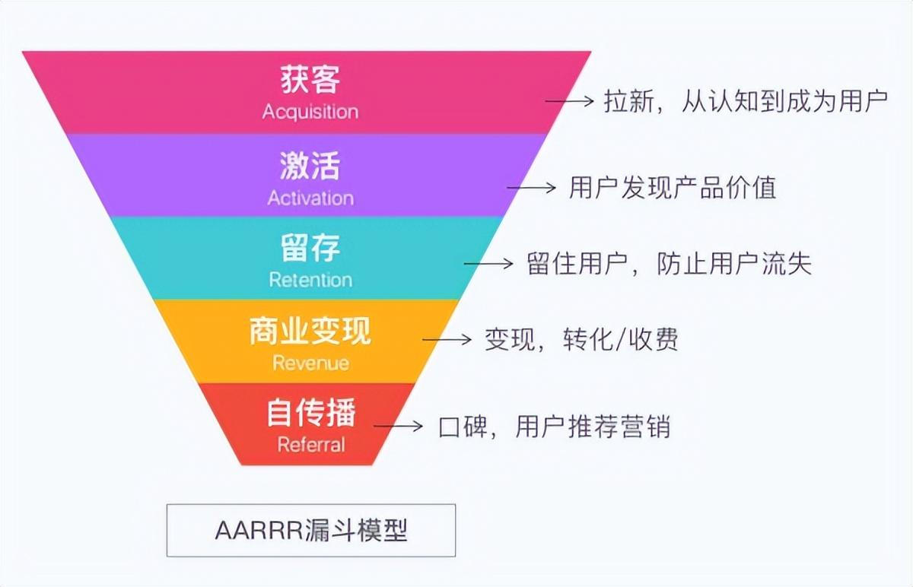

AARRR模型
AARRR是大家最熟知的用户生命周期模型，也被称为“海盗模型”，最早由戴夫·麦克卢尔（Dave McClure）在2007年提出。
早期定义
它把用户分为5个阶段：
- Acquisition（获取）
- Activation（激活）
- Retention（留存）
- Revenue（收入）
- Referral（自传播） 
这个模型引领了互联网时代的“增长黑客”理论与实践。非常适合互联网产品（特别是SaaS产品）的运营策略。
为什么是SaaS产品呢？
SaaS产品还是羊毛出在羊身上，要用户买单。但这里有一个获客成本的问题。
如果要靠销售来增长，需要大量招销售去获客，然后转化。这也是通常2B产品的玩法。
但AARRR模型先依靠互联网去获客，然后采用免费策略，让用户先用起来。
所以它第二步就是Activation-激活，通过免费版本让用户快速注册和体验。
然后它要让用户持续免费使用。所以Retention-留存在第三步。
然后等用户认可产品价值后，对产品产生依赖，才开始收费，也就是Revenue，带来收入。这里SaaS产品通常有2类收费策略：
- 免费1个月或免费一些点数，用户到期了或点数用完了，要付费购买
- 基础功能一直免费，高级功能收费
最后是Referral-裂变，这是增长黑客最关键的一环，通过裂变带来指数级增长，进一步降低获客成本。
这里通常引导裂变的手段就是利益驱动，比如用户推荐1个新用户，奖励1周/1个月 高级会员。
所以AARRR模型的提出，是针对互联网产品，先免费激活，再留存，再引导付费，然后利益驱动裂变，又获取更多新用户。
适合消费品的AARRR
那么到现在，随着消费品用户运营的开展，原有适合互联网免费策略的AARRR模型不是那么的匹配了。
我们仍然可以用AARRR的简写，但这里顺序和解释会有变化，把Revenue和Retention换个顺序。
- Acquisition（获取）
- Activation（激活）
- Revenue（收入）
- Retention（留存）
- Referral（自传播）
第二个A Activation-激活不再是SaaS里让用户注册免费使用产品，而是通过内容互动让用户活跃起来，对品牌产生认知。
然后第三步就促进购买和转化，带来Revenue-收入。
用户完成首购后，开始使用产品，服务开始。品牌方就要关注用户的Retention留存了。让用户留在这，持续购买，提升LTV。
最后还是Referral-传播。消费品肯定难以形成像互联网产品那样的指数级传播。但做做口碑，培养培养KOC，还是有必要的。
这里有一个挺有意思的洞察。越是小众，越是高端品牌，越需要做裂变。因为小众，网上资料少，所以更依赖口碑。因为高端，圈子更小，决策成本更高，所以也依赖圈层传播。
当然用户生命周期模型还有很多，比如阿里的AIPL模型，我们下期再讲。
总结
早期的AARRR模型适合互联网免费产品策略，并不适合现在消费品。但稍微改变的AARRR模型，可以用于品牌用户运营中。